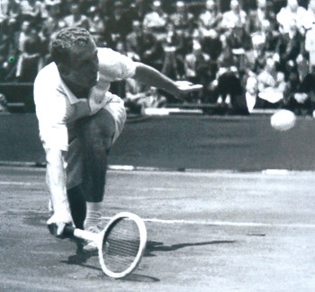
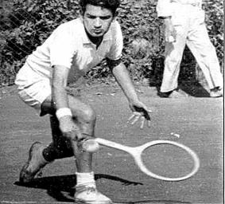

ORIGEN DEL NOMBRE
Este deporte fue ideado y patentado por el Mayor Wi.0nfield mientras se encontraba en la India durante los años 1873 y 1874, al cual llamó “Sphairistique”, pasando luego a llamarse tal como lo conocemos ahora, Tenis en español o Tenis en Inglés.Según varias fuentes informativas esta palabra es originaria del francés antiguo, y con ella se conoce el deporte que tanta popularidad ha tenido últimamente.
HISTORIAL
La cancha de tenis ideada por el mayor Winfield tenía la forma de un reloj de arena acostado, era más ancho en las bases que en el centro, donde se encontraba la red, y sólo tenía una división para realizar saques. Sobre sus costados y partiendo de los postes que sostenían la red, salían dos redes laterales que llegaban hasta la media cancha.
Este deporte pasó a Inglaterra después de que tuvo mucho auge en la India, se había comprobado que en la práctica del mismo podían intervenir las damas y esto lo hizo más popular.

Las reglas del juego no se conocían y cada grupo tenía sus propias reglas y en las dimensiones de la cancha cada quien ponía las más convenientes.
En 1875, los jugadores empezaron a conocer la importancia de este nuevo juego y decidieron reglamentarlo, después de varias reuniones en el MARILEBONE CLUB, reglamentaron el juego y el uso de raquetas.
El “paume” es el juego de pelota francés que se considera como el verdadero precursor del tenis actual, grandes jugadores de este deporte formaron esa comisión que ideo la reglamentación, las dimensiones de la cancha, la medida de la red, la forma de servir, etc. No de los primeros campeones, el Sr. Heatheste, sugirió que las pelotas que hasta entonces eran sin cubierta fueran revestidas con franela, esta sugerencia prosperó y las pelotas de ahora son forradas.
En 1877 se modificó el reglamento, se designó otra comisión que trató la puntualización de las faltas, la forma rectangular de la cancha, el uso de las pelotas forradas, la forma de las raquetas, y las dimensiones de la red, algo más cercano a lo que hoy conocemos, podría llamarse este año como la verdadera iniciación del tenis actual.
Del juego antiguo “paume” se sacó la foema de llevar el score, y del mismo juego la forma de sacar “ventajas” para ganar el juego o el set.
En Wimbledon se jugó el primer campeonato en 1874 con 22 jugadores, siendo el campeón Spencer Gore.
Después de este campeonato, se modificaron las reglas, Spencer Gore propuso que se admitiera el juego de volea, que hasta entonces no era permitido, ya que solo se podía hacer contacto con la pelota después del primer bote. Su propuesta fue aprobada y el jugador Hadow demostró en 1878 que había una defensa contra ese nuevo golpe, el globo o pelota alta.
El tenis cada día tenía más popularidad, se organizó aparte del torneo de Wimbledon otros torneos en Oxford y Dublín, en donde participaron varios jugadores británicos, sobresaliendo el jugador Hatley, quien fue el que hizo mejor uso de las “voleas”.
En 1879, se incluyó los singles de damas, siendo la ganadora la Srita. Langrust, de igual manera surgió el dobles mixtos, ganando la srita. Costello y el sr. Elliot.

El smash hizo su aparición en 1881, y lo pusieron de moda los hermanos Renshaw, a quienes se les conoció posteriormente como los hermanos “Renshaw Smash”.
Las diferentes prácticas del tenis ocasionaron 2 tendencias, una que se jugaba la devolución después del bote de la pelota y otra que daba velocidad y agresividad con el uso del smash y la volea. Como consecuencia de estos dos juegos, se hicieron las reglas para los torneos, se aprobaron tanto el smash como la volea y uno de sus innovadores, Renshaw, ganó el campeonato de Inglaterra por 7 veces consecutivas. Esta fue la época de la verdadera evolución en el tenis.
En 1912 se reunieron en París miembros de diferentes asociaciones y dispusieron constituir una Federación Internacional, la cual quedó integrada por 15 naciones.
La Copa Davis es la competencia internacional por equipos más importante, esta fue instituida en 1900 por el Dr. Dwigth F. Davis, quien fuera notable jugador, para que se jugara anualmente entre Inglaterra y Estados Unidos, quienes sobresalían en este deporte. Actualmente la Copa Davis es el torneo por Equipos que juegan casi todas las naciones del planeta.
Este interesante toeneo contó desde sus inicios con el apoyo del público, no sólo por la gente que lo practicaba sino también por aquellos que no querían perderse el espectáculo, ya que lo admiraban por su belleza y jerarquía mundial.
Actualmente entre los mejores torneos aparte de Copa Davis, se cuenta con “Roland Garros”, “Wimbledon “, Abierto de E:U, de Australia, etc.
Los encuentros de grandes jugadores internacionales profesionales hacen que en este tipo de encuentros se paguen grandes sumas de dinero en premios y sean presenciados por millones de gente en el mundo.
En esta época los medios de comunicación han logrado que el tenis se conozca y se lleve a todas las naciones y por lo tanto sea cada vez más las personas en el mundo que lo jueguen.